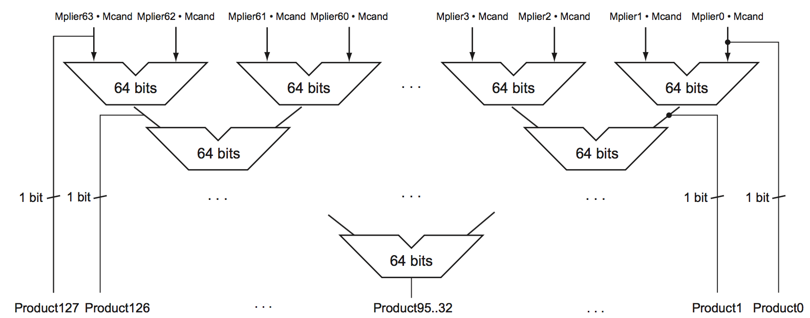

Module 1
Module 3

LEGV8 Reference Instruction Field Naming Convention
- Opcode = OPeration CODE; number reference for given instruction.
- Rd: Destination register
- Rn: An operand in a register (first referenced in assembly code format) for an arithmetic operation.
- Rm: An operand in a register (second referenced in assembly code format) for an arithmetic operation.
- Ra: A value in a register to be used in an addition or subtraction. Think "accumulator"
- Rt = Temporary (or Target, used differently in MiPS) Register
- shamt = SHift AMounT
- ALU_Immediate = Arithmetic Logic Unit Immediate value; a number value immediately assigned to operation
- DT_Address = DaTa Address; (op, rt, and DT, which is which in instruction: "STUR x9, [x10, #4]"
- op = 2-bit code for addressing arithmetic, somehow.
- BR_Address = BRanch Address; a label
- COND_BR_Address = CONDitional BRanch Address
- MOV_Immediate = MOVe Immediate value
Module 4
Module 4 Definitions
ch.2.4 Signed & Unsigned Numbers
- Binary digit: Also called binary bit. One of the two numbers in base 2, 0 or 1, that are the components of information.
- Least significant bit: The rightmost bit in an LEGv8 doubleword.
- Most significant bit: The leftmost bit in an LEGv8 doubleword.
- Two's complement: A signed number representation where a leading 0 indicates a positive number and a leading 1 indicates a negative number. The complement of a value is obtained by complementing each bit (0 → 1 or 1 → 0), and then adding one to the result.
- One's complement: A notation that represents the most negative value by 10 … 000two and the most positive value by 01 … 11two, leaving an equal number of negatives and positives but ending up with two zeros, one positive (00 … 00two) and one negative (11 … 11two). The term is also used to mean the inversion of every bit in a pattern: 0 to 1 and 1 to 0.
- Biased notation: A notation that represents the most negative value by 00 … 000two and the most positive value by 11 … 11two, with 0 typically having the value 10 … 00two, thereby biasing the number such that the number plus the bias has a non-negative representation.
ch.3.2 Addition & Subtraction
- Arithmetic Logic Unit (ALU): Hardware that performs addition, subtraction, and usually logical operations such as AND and OR.
ch.3.4 Division
- Dividend: A number being divided.
- Divisor: A number that the dividend is divided by.
- Quotient: The primary result of a division; a number that when multiplied by the divisor and added to the remainder produces the dividend.
- Remainder: The secondary result of a division; a number that when added to the product of the quotient and the divisor produces the dividend.
ch.3.5 Floating Point
- Scientific notation: A notation that renders numbers with a single digit to the left of the decimal point.
- Normalized: A number in floating-point notation that has no leading 0s.
- Floating point: Computer arithmetic that represents numbers in which the binary point is not fixed.
- Fraction: The value, generally between 0 and 1, placed in the fraction field. The fraction is also called the mantissa.
- Exponent: In the numerical representation system of floating-point arithmetic, the value that is placed in the exponent field.
- Overflow (floating-point): A situation in which a positive exponent becomes too large to fit in the exponent field.
- Underflow (floating-point): A situation in which a negative exponent becomes too large to fit in the exponent field.
- Double precision: A floating-point value represented in a 64-bit doubleword.
- Single precision: A floating-point value represented in a 32-bit word.
- Exception: Also called interrupt. An unscheduled event that disrupts program execution; used to detect overflow.
- Interrupt: An exception that comes from outside of the processer. (Some architectures use the term interrupt for all exceptions.
- Guard: The first of two extra bits kept on the right during intermediate calculations of floating-point numbers; used to improve rounding accuracy.
- Round: Method to make the intermediate floating-point result fit the floating-point format; the goal is typically to find the nearest number that can be represented in the format. It is also the name of the second of two extra bits kept on the right during intermediate floating-point calculations, which improves rounding accuracy.
- Units in the last place (ulp): The number of bits in error in the least significant bits of the significand between the actual number and the number that can be represented.
- Sticky bit: A bit used in rounding in addition to guard and round that is set whenever there are nonzero bits to the right of the round bit.
- Fused multiply add: A floating-point instruction that performs both a multiply and an add, but rounds only once after the add.
